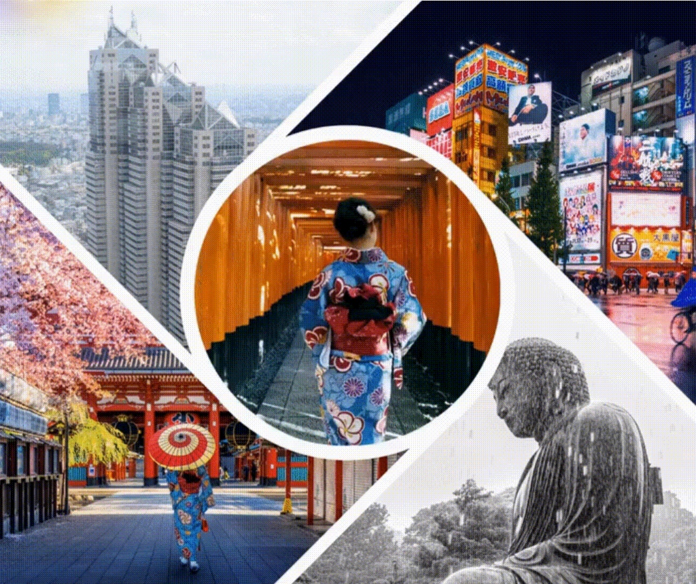

Pre-Production
The foundation of your film. Learn about screenwriting, storyboarding, and scouting locations in Tokyo's diverse wards.
Enter Phase 1 →
Tokyo is one of the most filmed cities in the world. Its streets, interiors, trains, and neighborhoods have been used repeatedly to stage some of cinema's most enduring moments.
This course is grounded in the study and filming of individual scenes. We examine how filmmakers use Tokyo to shape performance, framing, movement, and atmosphere within a single, contained moment, and how meaning is constructed at the scale of a scene rather than an entire film.
An ever-expanding library of cinematic Tokyo B-roll and stock footage. Students capture high-quality raw material of the city's unique atmosphere, creating a sustainable resource for future storytellers.
Explore the three phases of filmmaking, adapted from Russell Sharman's Moving Pictures and tailored for the Tokyo study abroad experience.
The foundation of your film. Learn about screenwriting, storyboarding, and scouting locations in Tokyo's diverse wards.
Enter Phase 1 →Lights, Camera, Action. Master the art of cinematography, lighting, and directing in the bustling streets of Shibuya and Shinjuku.
Enter Phase 2 →The final cut. Editing, sound design, and color grading to bring your cinematic vision to life.
Enter Phase 3 →The films (and anime) we will analyze for this class: